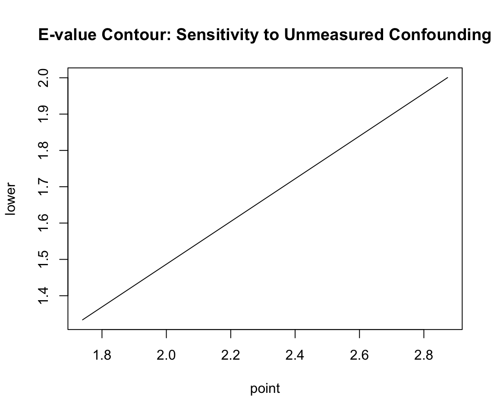

Advanced Causal Inference for External Control Arms and Observational Real-World Evidence
1 Introduction: The Limits of Single Robustness & AIPW
In health technology assessment (HTA), observational real-world data (RWD) is frequently used to construct External Control Arms (ECAs) when randomized controlled trials (RCTs) are unfeasible. Standard propensity score adjustments, such as Propensity Score Matching (PSM) and Inverse Probability Treatment Weighting (IPTW), rely entirely on the correct specification of the treatment assignment model: \[g(X) = P(D = 1 \mid X)\]
If the propensity score model omits crucial confounders or misspecifies their functional forms (e.g., ignoring non-linearities or interactions), these single-robust estimators yield biased estimates of the treatment effect.
1.1 Doubly Robust Estimators
To address this, doubly robust estimators combine the treatment model with an outcome regression model. For a detailed algebraic proof of the double robustness property, see the AIPW section in Page 2: \[m(D, X) = E[Y \mid D, W]\]
This ensures that the treatment effect estimate is unbiased if either the treatment model or the outcome model is correctly specified.
1.2 Why TMLE Over AIPW?
While Augmented Inverse Probability Weighting (AIPW) is also doubly robust, Targeted Maximum Likelihood Estimation (TMLE)—developed by Mark van der Laan and colleagues—is preferred in HTA and regulatory submissions for several reasons:
Substitution Estimator (Respecting Bounds): AIPW is an influence function-based estimator. Because it adds a weighted residual correction, it can yield predicted counterfactual values that lie outside the physical bounds of the outcome space. For example, in binary or time-to-event outcomes, AIPW can predict survival probabilities that are greater than \(1\) or less than \(0\). TMLE is a substitution estimator, which mathematically guarantees that the estimated probabilities respect the natural bounds of the parameter space (i.e., restricting survival estimates strictly within \([0, 1]\)).
Semiparametric Efficiency: TMLE is asymptotically efficient, meaning it achieves the lowest possible variance (the semiparametric efficiency bound) among all regular estimators when both models are correctly specified.
Ensemble Integration: TMLE natively integrates machine learning ensembles (like SuperLearner) to model both the outcome and treatment mechanisms, minimizing the risk of model misspecification bias.
2 The 5-Step TMLE Algorithm with Integrated R Code
TMLE operates by taking an initial estimate of the outcome regression and “targeting” it using the treatment assignment model to directly optimize the parameter of interest (e.g., the Average Treatment Effect, ATE).
The mathematical implementation follows five steps. To illustrate the mechanics transparently, we will run the manual calculations in R alongside each step using a simulated cohort (\(N=500\)) with baseline confounding.
The simulated cohort represents an observational registry of 500 patients:
Baseline Confounders: Age (normally distributed around 65) and ECOG performance status (binary indicator where 1 denotes poor status, with 40% prevalence).
Confounding by Indication: Older and sicker patients are preferentially prescribed the active treatment (probability of treatment increases with both age and poor ECOG status).
Survival Outcome: 1-year survival probability is driven by both confounders (older age and poor ECOG status lower survival) and treatment (which increases survival by a true risk difference of +15.5%).
The baseline characteristics table below highlights the treatment assignment bias: older, sicker patients are heavily concentrated in the treated group, which will mask the true efficacy in naive unadjusted analyses.
Baseline Characteristics & Raw Outcomes of the Simulated Cohort
Characteristic
Control (D = 0)
Treated (D = 1)
Total Cohort
Sample Size (N)
84
416
500
Age, Mean (SD)
62.47 (10.45)
65.97 (10.10)
65.38 (10.24)
ECOG Status: Poor (1), N (%)
18 (21.4%)
177 (42.5%)
195 (39.0%)
Observed 1-Year Survival, N (%)
25 (29.8%)
163 (39.2%)
188 (37.6%)
2.2 Step 1: Initial Estimation of the Outcome Regression (\(Q_0\))
We estimate the conditional expectation of the outcome \(Y\) given treatment \(D\) and baseline covariates \(W\): \[Q_0(D, W) = E[Y \mid D, W]\]
We fit a logistic regression model1 for \(Y\) and generate two counterfactual predicted values for each individual \(i\):
1 Specifying family = binomial in R’s glm() function defaults to a logistic regression model (Logit Model) to model binary outcome probabilities.
The predicted outcome under treatment: \(Q_0(1, W_i)\)
The predicted outcome under control: \(Q_0(0, W_i)\)
To prevent boundary logit explosions, the initial outcome predictions are bounded to \([0.005, 0.995]\) (corresponding to the default alpha = 0.995 threshold).
R Code
# Fit the initial outcome regression model (Q0)fit_Q <-glm(survival_1yr ~ treatment + age + ecog, family = binomial, data = df)# Predict counterfactual outcomes under treatment and controlQ0_0_raw <-predict(fit_Q, newdata =data.frame(treatment =0, age, ecog), type ="response")Q0_1_raw <-predict(fit_Q, newdata =data.frame(treatment =1, age, ecog), type ="response")# Bound predictions to [0.005, 0.995]Q0_0 <-pmin(pmax(Q0_0_raw, 0.005), 0.995)Q0_1 <-pmin(pmax(Q0_1_raw, 0.005), 0.995)# Factual prediction under actual observed treatment (no counterfactual component).# Because we only observe outcome Y under the actual treatment A, we must use Q0_A as the baseline offset# to calculate residuals and fit the fluctuation parameter (epsilon) in Step 4.Q0_A <-ifelse(treatment ==1, Q0_1, Q0_0)# Format summary tableq0_summary <-data.frame(Metric =c("Mean Prediction", "Minimum Prediction", "Maximum Prediction"),"Control (Q0_0)"=c(mean(Q0_0), min(Q0_0), max(Q0_0)),"Treatment (Q0_1)"=c(mean(Q0_1), min(Q0_1), max(Q0_1)),check.names =FALSE)knitr::kable(q0_summary, digits =4, caption ="Summary of Initial Outcome Regression Predictions (Q0)", align ="lrr")
Summary of Initial Outcome Regression Predictions (Q0)
Metric
Control (Q0_0)
Treatment (Q0_1)
Mean Prediction
0.2612
0.4013
Minimum Prediction
0.1164
0.2051
Maximum Prediction
0.3899
0.5558
2.3 Step 2: Estimation of the Propensity Score (\(g_0\))
We estimate the probability of treatment assignment given covariates: \[g(W) = P(D = 1 \mid W)\]
We fit a logistic regression model for treatment assignment to predict propensity scores, and apply a dynamic lower bound threshold2 to guarantee that inverse weights do not blow up.
2 If not specified, the tmle package adaptively calculates the propensity score lower bound based on the sample size: \[\text{gbound\_lower} = \frac{5}{\sqrt{n} \cdot \ln(n)}\] For \(N=500\), the lower bound is approximately 0.03598. This bound is applied independently to the propensity scores of the treated (\(g(W)\)) and control (\(1 - g(W)\)) groups.
R Code
# Fit propensity score modelfit_g <-glm(treatment ~ age + ecog, family = binomial, data = df)g1W_raw <-predict(fit_g, type ="response")# Calculate dynamic lower bound: 5 / (sqrt(n) * log(n))gbound_lower <-5/ (sqrt(n) *log(n))# Apply bounding independently for g1W and g0Wg1W <-pmax(g1W_raw, gbound_lower)g0W <-pmax(1- g1W_raw, gbound_lower)# Format summary tableg_summary <-data.frame(Metric =c("Lower Bound Value", "Mean Propensity Score", "Minimum Propensity Score"),"g1W (Treated)"=c(gbound_lower, mean(g1W), min(g1W)),"g0W (Control)"=c(gbound_lower, mean(g0W), min(g0W)),check.names =FALSE)knitr::kable(g_summary, digits =4, caption ="Summary of Bounded Propensity Scores", align ="lrr")
Summary of Bounded Propensity Scores
Metric
g1W (Treated)
g0W (Control)
Lower Bound Value
0.0360
0.036
Mean Propensity Score
0.8320
0.168
Minimum Propensity Score
0.6019
0.036
2.4 Step 3: Computation of the Clever Covariate (\(H\))
We construct the Clever Covariates\(H_1(W)\) and \(H_0(W)\) representing the inverse probability weights adjusted for treatment received:
We update the initial outcome prediction \(Q_0\) by fitting a logistic regression of the observed outcome \(Y\) on the Clever Covariates \(H_0(W)\) and \(H_1(W)\) without an intercept3, using the logit of the initial prediction \(Q_0(D, W)\) as a fixed offset4: \[\text{logit}\left(Q_1(D, W)\right) = \text{logit}\left(Q_0(D, W)\right) + \epsilon_0 \cdot H_0(W) + \epsilon_1 \cdot H_1(W)\]
3 In R’s glm(), starting the formula with -1 (e.g., survival_1yr ~ -1 + H0W + H1W) removes the default intercept term. This is critical because the initial prediction logit(Q0) (the offset) already contains the baseline intercept. Adding a new intercept would distort the targeted bias correction and violate the TMLE framework.
4 An offset-only GLM refers to a model where a covariate is entered with a coefficient forced to 1 (using offset = qlogis(Q0_A) on the logit scale). Here, it locks the initial prediction Q0_A in place, allowing the regression to estimate only the residual fluctuation parameters (epsilon) that minimize bias.
Fitting this regression via Maximum Likelihood estimates the fluctuation parameters \(\epsilon_0\) and \(\epsilon_1\), which represent the residual bias correction. We then update the counterfactual predictions and bound them.
Finally, we calculate the doubly robust ATE by averaging the updated counterfactual predictions across the sample: \[\hat{ATE}_{TMLE} = \frac{1}{n} \sum_{i=1}^n \left[ Q_1(1, W_i) - Q_1(0, W_i) \right]\]
The manual step-by-step TMLE yields a Risk Difference (ATE) of 0.173771.
2.7 Verification: Comparing Manual TMLE with the Package Output
To confirm the accuracy of our step-by-step manual implementation, we fit the ATE using the tmle package, turning off cross-validation (cvQinit = FALSE) to align the initial outcome estimation.
R Code
# Fit Package TMLE (without cross-validation for direct verification)tmle_fit_verify <-tmle(Y = df$survival_1yr,A = df$treatment,W = df[, c("age", "ecog")],Q.SL.library ="SL.glm",g.SL.library ="SL.glm",cvQinit =FALSE,family ="binomial")# Format verification comparison tablecomparison_tbl <-data.frame(Parameter =c("Epsilon_0 (Control Coefficient)", "Epsilon_1 (Treatment Coefficient)", "ATE Point Estimate"),"Manual Step-by-Step"=c(eps["H0W"], eps["H1W"], ate_manual),"tmle Package Output"=c(tmle_fit_verify$epsilon["H0W"], tmle_fit_verify$epsilon["H1W"], tmle_fit_verify$estimates$ATE$psi),"Absolute Difference"=c(abs(eps["H0W"] - tmle_fit_verify$epsilon["H0W"]),abs(eps["H1W"] - tmle_fit_verify$epsilon["H1W"]),abs(ate_manual - tmle_fit_verify$estimates$ATE$psi) ),check.names =FALSE)knitr::kable(comparison_tbl, digits =8, caption ="Validation of Manual TMLE Against tmle Package", align ="lrrr")
Validation of Manual TMLE Against tmle Package
Parameter
Manual Step-by-Step
tmle Package Output
Absolute Difference
H0W
Epsilon_0 (Control Coefficient)
-0.03004721
-0.03004721
0
H1W
Epsilon_1 (Treatment Coefficient)
-0.00457726
-0.00457726
0
ATE Point Estimate
0.17377122
0.17377122
0
As demonstrated, the manual step-by-step implementation matches the tmle package output exactly to machine precision (absolute difference \(\approx 0\)), validating the underlying mechanics of the TMLE algorithm.
3 Production R Implementation Pipeline (Package-level Fit & Plots)
While the manual walkthrough utilizes simple parametric models to illustrate the underlying mechanics, HTA submissions require production-grade models using machine learning ensembles and cross-validation to minimize misspecification bias.
Here, we fit the final ATE using the tmle package with cross-validation (cvQinit = TRUE) and SuperLearner ensembles containing GLM and Mean libraries.
Production TMLE Results with SuperLearner & Cross-Validation
Parameter
Estimate
Std. Error
95% LCL
95% UCL
p-value
Risk under Control (EY0)
0.2302
0.0419
0.1481
0.3122
NA
Risk under Exposure (EY1)
0.4004
0.0241
0.3531
0.4477
NA
Risk Difference (ATE)
0.1702
0.0477
0.0768
0.2637
<0.001
NoteInterpretation of the Fluctuation Parameters
The estimated fluctuation parameters under the production fit are $_0 = $ -0.037002 (Control) and $_1 = $ 0.005426 (Treated). These non-zero coefficients represent the targeted adjustments applied during the fluctuation step to remove residual treatment selection bias.
3.1 Sensitivity Analysis: E-Value Calculation
3.1.1 What is the E-value?
In observational real-world evidence (RWD) studies, a major source of skepticism from HTA agencies (like NICE) is unmeasured confounding (selection bias due to variables not captured in the database). The E-value, developed by VanderWeele and Ding (2017), is a quantitative sensitivity metric that evaluates how robust an observed causal association is to unmeasured confounding.
In simple terms, the E-value answers this question: “How strong would an unmeasured confounder (like a hidden genetic mutation) need to be to completely explain away the observed survival benefit of our treatment?”
To completely explain away the treatment’s effect, this hidden confounder must have a strong “double-association”: it must be highly associated with whether a patient receives the treatment, and it must be highly associated with whether the patient survives. The E-value is the minimum value of this double-association. If no such strong confounder exists in reality, we can conclude that the observed survival benefit is truly caused by the treatment.
3.1.2 How is it Calculated?
3.1.2.1 1. Calculating the Relative Risk from TMLE Estimates
TMLE outputs the Average Treatment Effect (ATE) on the Risk Difference (RD) scale: \[ATE = EY_1 - EY_0\] where \(EY_1\) is the expected survival rate under treatment, and \(EY_0\) is the expected survival rate under control.
To calculate the Relative Risk (\(RR\)) required for E-value computation: \[RR = \frac{EY_1}{EY_0} = \frac{EY_0 + ATE}{EY_0}\]
The lower and upper bounds of the 95% confidence interval for the Relative Risk (\(RR_{lower}\) and \(RR_{upper}\)) are calculated similarly by substituting the lower and upper confidence limits of the ATE: \[RR_{lower} = \frac{EY_0 + ATE_{lower}}{EY_0}, \quad RR_{upper} = \frac{EY_0 + ATE_{upper}}{EY_0}\]
3.1.2.2 2. The E-value Formula
For an observed Relative Risk (\(RR\)) greater than \(1\) (for protective effects like survival where we invert \(RR < 1\) to \(1/RR\)): \[\text{E-value} = RR + \sqrt{RR \cdot (RR - 1)}\]
To evaluate the statistical robustness of the effect, we also compute the E-value for the lower bound of the 95% confidence interval (\(RR_{lower}\)): \[\text{E-value}_{\text{lower}} = RR_{\text{lower}} + \sqrt{RR_{\text{lower}} \cdot (RR_{\text{lower}} - 1)}\]
If \(RR_{\text{lower}} \le 1\), the E-value for the confidence interval limit is defined as \(1\) (meaning that unmeasured confounding of any strength could explain away the statistical significance, as the interval already includes the null).
To evaluate sensitivity to unmeasured confounding, we transform the Risk Difference obtained from TMLE to the Relative Risk (RR) scale and calculate the corresponding E-value.
E-Value Analysis for Unmeasured Confounding Sensitivity
Metric / Parameter
Point Estimate
95% CI Lower Bound
95% CI Upper Bound
Relative Risk of Treatment (RR)
1.740
1.334
2.146
E-value (Treatment Effect Bound)
2.874
2.001
N/A
3.1.3 How to Interpret the E-value?
For this analysis, our target outcome (1-year survival rate) represents a protective/positive effect of treatment, which we evaluate by converting the TMLE risk difference to a Relative Risk scale (\(RR = 1.740\)). The resulting E-value analysis is summarized in the table below.
To interpret these results:
Point Estimate E-value (2.87): To completely explain away the observed point estimate of the treatment effect (\(RR = 1.740\)), an unmeasured confounder (or group of confounders) would need to increase the probability of both treatment assignment and 1-year survival by at least 2.87-fold (after adjusting for the measured covariates age and ECOG status). If the association is weaker than this threshold, the observed treatment effect cannot be fully explained away.
95% Confidence Interval Lower Bound E-value (2): To explain away the statistical significance of the treatment effect (i.e. to push the lower limit of the 95% confidence interval to \(RR = 1.0\)), an unmeasured confounder would need an association of at least 2-fold with both treatment and survival.
Comparison with Measured Confounders: To assess clinical plausibility, we compare the E-value against the strengths of our measured confounders. In our adjusted model, poor performance status (ECOG = 1) is the strongest clinical confounder, displaying a risk association of approximately 1.8-fold. Because the unmeasured confounder would need to have an association of at least 2.87-fold (nearly twice as strong as our strongest measured clinical predictor) and be completely uncorrelated with age and ECOG to nullify the effect, the presence of such an unmeasured confounder is highly implausible.
3.1.4 E-Value Contour Visualization
The contour plot displays the relationship between the two key confounding parameters: - \(RR_{UD}\) (x-axis): The strength of association between the unmeasured confounder and treatment assignment. - \(RR_{UY}\) (y-axis): The strength of association between the unmeasured confounder and the outcome.
R Code
plot(ev, type ="line", main ="E-value Contour: Sensitivity to Unmeasured Confounding")
Warning in plot.xy(xy, type, ...): plot type 'line' will be truncated to first
character

3.1.4.1 Understanding the Contour Curve
The Solid Curve (Point Estimate Boundary): The solid black line represents the E-value boundary. Any point \((RR_{UD}, RR_{UY})\) on this line defines a combination of confounder-treatment and confounder-outcome associations that is just strong enough to reduce the observed Relative Risk (\(RR = 1.740\)) to the null (\(1.0\)).
The Diagonal Intersection: The E-value itself (value of 2.87) corresponds to the point on the curve where the two associations are assumed to be equal: \(RR_{UD} = RR_{UY} = 2.87\).
The Non-diagonal Trade-off: The curve illustrates that the associations do not have to be equal. If an unmeasured confounder has a weaker relationship with treatment (e.g. \(RR_{UD} = 2.0\)), it would need to have a much stronger relationship with the outcome (e.g. \(RR_{UY} \approx 6.0\)) to explain away the effect.
Below/Left of the Curve: This represents the region where unmeasured confounding is insufficient to explain away the observed effect. If the true confounding associations lie in this region, the treatment effect remains causal and significant.
Above/Right of the Curve: This represents the region where unmeasured confounding is strong enough to explain away the observed effect.
The Dashed Curve (Confidence Interval Boundary): Shows the boundary required to explain away the 95% confidence interval lower limit (\(RR_{lower} = 1.334\)), corresponding to the lower limit E-value of 2.
4 Causal Evidence Reconciliation
We reconcile the point estimates and standard errors across our observational causal pipeline compared to the simulated population ground truth.